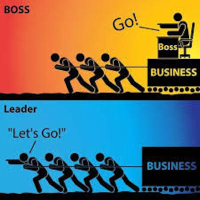

Leaders have super power(s) to influence people in the organisation
Let’s start by distinguishing leaders from managers. In the context of a project leadership is about guiding and motivating others in their work to achieve project goals.
Managers have formal power over the team: they can direct work, hire and fire, but this power comes from their position inside the organisation, it is contextual, outside of the organisation they are powerless. Leaders retain their power even outside the organisation because they adapt to the context to communicate and influence.
TIP:Project Managers have formal power but they should also be leaders, able to influence others.

Leaders emerge from different sources of power. Power is the ability to influence the behavior of others. French and Raven (1959) list the 5 sources of power:
Legitimate power is the power that comes from job titles, positions, and roles. While legitimate power can be very effective in aligning strategies and actions, it can also be a challenge to ideas coming from the frontline. The key with legitimate power is to focus on the “what”, “when” and “why” but let people solve the “how”.
Reward power is the power to influence and to drive performance through rewards and recognition. Surprise rewards (eg. a gift card for a job well done) and simple recognition (eg. a thank you) are often more effective than monetary rewards. Give out sincere thank yous and small tokens of appreciation to exert reward power.
Expert power is the most enduring and respected power. We’ve all seen this power when someone really knows what they are doing. They have previous experience and are great problem solvers, they have expertise, skills, and knowledge.
Referent power is the power to influence others using your personality traits, interpersonal skills, and integrity. Referent power is in those people that have a presence about them and a strong track record. They often have people that want to follow them and their leadership.
Coercive power is the power to make someone do something through threats and coercion. It is the most negative use of power so when you see coercive power in use, ask yourself why it is being used. Is it for personal gain, fear of failure, anger? The use of coercive power can be a warning sign of cultural issues in the organization.
It is important to understand and observe how power is used inside an organization. In meetings and interactions, try to profile different leaders and list their sources of power. This exercise will tell about the leader but also about the organisation because leaders usually embody the culture of the organisation.
Leaders should be skilled in: